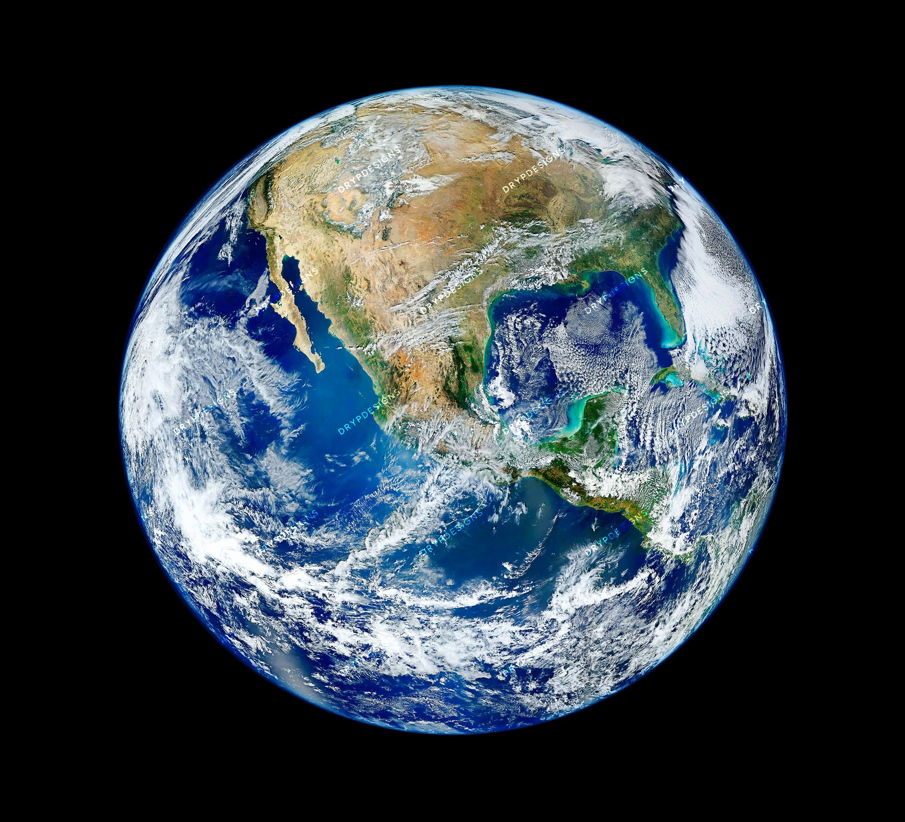

My passion within the STEM field is finding methods & alternatives to support innovation with consideration for the world around us.
There is always a way to protect our well-being and others. It may just take more time, effort and a little bit of compromise.
The impossible is always a possiblity.
At this current time, my website is a working progress. Fruther down the line, I plan on uploading my essays, projects, experiments, repository and etc!
